Mebiusbox 2.x ユーザーガイド
オプション
一般
ソフトウェアの更新を確認する
起動時に最新のソフトウェアを利用可能か確認します。
最新のバージョンが利用可能の場合は、上部にてお知らせします。
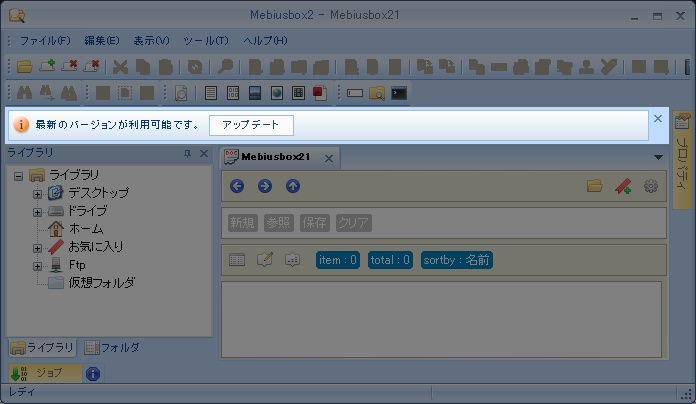
最新のバージョンが利用可能の場合は、上部にてお知らせします。
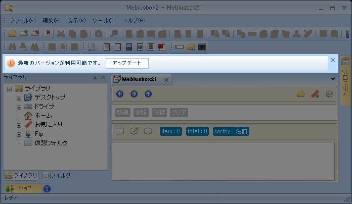
タブ
新規タブを開いたときにホームフォルダを開く
タブを新規に作成したら、ホームフォルダを開くようにします。ホームフォルダの設定はこちら。
タブ幅の最大値
タブ幅の最大値。
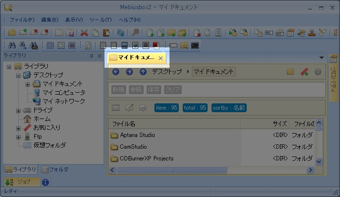
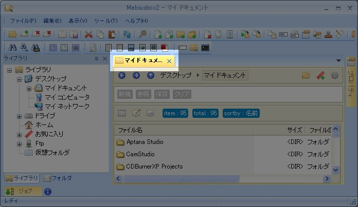
自動で色付けをする*
タブの色を自動で付けます。再起動が必要。
フォルダ
フォルダを優先する
フォルダを先頭に表示します。
フォルダ › Etp
→こちら
フォルダ › ftp
フォルダ › Ftp › Host
新規、変更、削除
FTP ホストを追加、変更、削除します。
フォルダ › Ftp › 環境
転送
転送モードを指定します。
「ファイル名で切替」を選択した場合、リストに一致したファイルはアスキーモードで転送します。
ここではワイルドカードで指定します。
ここではワイルドカードで指定します。
アドレスバー
アドレスの部分最大幅
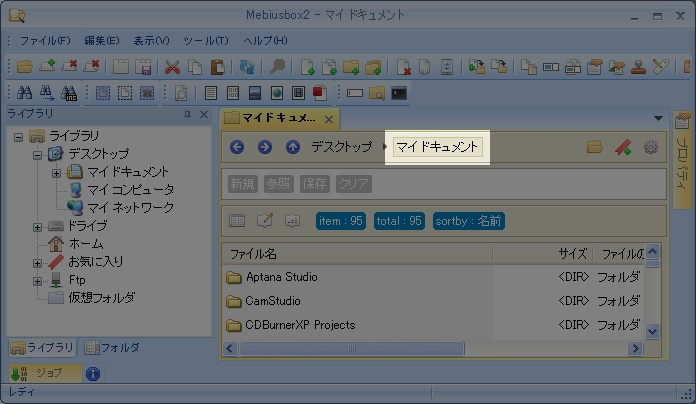
ビュー
ビュー › 詳細
スキーム
詳細ビューで表示するフォルダを識別するスキーム。複数指定可能で、カンマで区切る。
カラム幅を記憶する
カラムの幅を記憶します。
ビュー › 詳細 › カラムセット
スキームとカラムセットを関連付けます。
フォルダを開いたとき、スキームに対応したカラムセットに自動で切り替えます。
ビュー › サムネイル
スキーム
サムネイルビューで表示するフォルダを識別するスキーム。複数指定可能で、カンマで区切る。
サムネイルの大きさ
サムネイルの大きさを指定します。
ビュー › ミックス
スキーム
サムネイルビューで表示するフォルダを識別するスキーム。複数指定可能で、カンマで区切る。
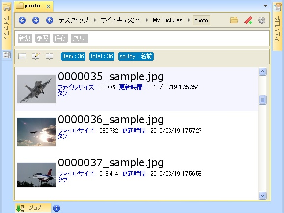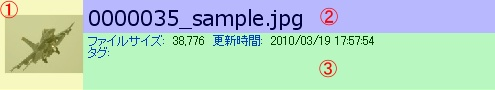
サムネイルの大きさ
①サムネイルの大きさを指定します。
表示行数
③表示行数
タイトルに表示する項目
②の領域に表示する項目
表示する項目
③の領域に表示する項目群。
「$.」はいらない。
改行したい場合は「<br>」を入れる。
項目と項目の間は半角空白。
ビュー › ムービー
スキーム
ムービービューで表示するフォルダを識別するスキーム。複数指定可能で、カンマで区切る。
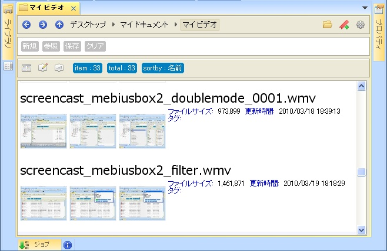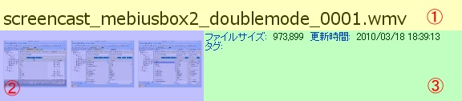
サムネイルの大きさ
②サムネイルの大きさを指定します。
サムネイルの数
②サムネイルの表示数
表示行数
③表示行数
タイトルに表示する項目
①の領域に表示する項目
表示する項目
③の領域に表示する項目群。
「$.」はいらない。
改行したい場合は「<br>」を入れる。
項目と項目の間は半角空白。
ビュー › ニコニコ動画
スキーム
ニコニコ動画ビューで表示するフォルダを識別するスキーム。複数指定可能で、カンマで区切る。
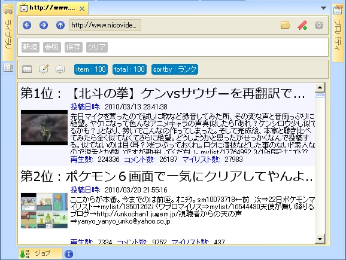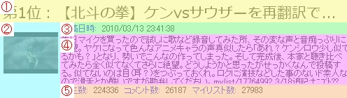
サムネイルの大きさ
②サムネイルの大きさを指定します。
表示行数
④表示行数
タイトルに表示する項目
①の領域に表示する項目
「$.」はいらない。
表示する項目
④の領域に表示する項目群。
「$.」はいらない。
改行したい場合は「<br>」を入れる。
項目と項目の間は半角空白。
ヘッダーに表示する項目
③の領域に表示する項目群。
「$.」はいらない。
項目と項目の間は半角空白。
フッターに表示する項目
⑤の領域に表示する項目群。
「$.」はいらない。
項目と項目の間は半角空白。
ビューア
表示位置
ビューアの表示位置。要再起動。
右
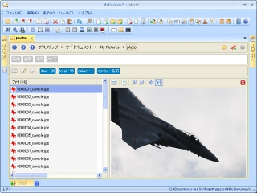
下
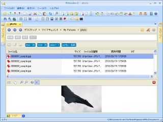
ビューア › テキスト
拡張子
ビューアで開くファイルの拡張子を指定。ドット(.)はいらない。複数指定する場合はコロン(;)を入れる。
読み込みサイズ
ファイルから読み込むサイズ。0 は全て。
ビューア › バイナリ
拡張子
ビューアで開くファイルの拡張子を指定。ドット(.)はいらない。複数指定する場合はコロン(;)を入れる。
ビューア › 画像
拡張子
ビューアで開くファイルの拡張子を指定。ドット(.)はいらない。複数指定する場合はコロン(;)を入れる。
ビューア › Webブラウザ
拡張子
ビューアで開くファイルの拡張子を指定。ドット(.)はいらない。複数指定する場合はコロン(;)を入れる。
ビューア › MediaPlayer
拡張子
ビューアで開くファイルの拡張子を指定。ドット(.)はいらない。複数指定する場合はセミコロン(;)を入れる。
ビューア › PDF
拡張子
ビューアで開くファイルの拡張子を指定。ドット(.)はいらない。複数指定する場合はセミコロン(;)を入れる。
ペイン
ペイン › ライブラリ
ホーム
ホームフォルダを指定します。
表示
ライブラリペインに表示するアイテムを設定します。
- デスクトップ
- ドライブ
- ホーム
- お気に入り
- FTP
- 仮想フォルダ
常に新しいタブで開く
ライブラリペインからフォルダを開くときに、常に新しいタブで開くかどうか指定します。
行間
ライブラリペインのツリーコントロールの行間
ペイン › フォルダ
行間
フォルダペインのツリーコントロールの行間
サムネイル
サムネイルのサイズ
サムネイルの大きさ。
サムネイルの数
動画のサムネイル作成数。
サムネイルの間隔
動画のサムネイルを作成する間隔。0 は等間隔。単位は 0.1 秒。
動画：作成する
動画のサムネイルを作成するかどうか
動画：拡張子を指定する
動画のサムネイルを作成するファイルの拡張子を指定します。ドット(.)は必要ない。複数ある場合はセミコロン(;)を入れる。
画像：作成する
画像のサムネイルを作成するかどうか
画像：拡張子を指定する
画像のサムネイルを作成するファイルの拡張子を指定します。ドット(.)は必要ない。複数ある場合はセミコロン(;)を入れる。
キャッシュ
キャッシュを有効にする
取得した情報をＨＤＤにキャッシュします。
- サムネイル
- Exif
- ID3
- ハッシュ
- 動画コーデック
一時ファイル
一時ファイルを作成するファイルの最大サイズ
Mebiusbox2 では、書庫ファイル内のアイテムや、FTP フォルダ内のアイテムから、情報を取得するために一時的にファイルを解凍、ダウンロードします。
その時の、一時ファイル作成の許容最大ファイルサイズを指定して、一時ファイルの作成を制限することができます。
パス
パス情報を設定します。
現在設定できるパス情報は以下のとおりです。
現在設定できるパス情報は以下のとおりです。
| キー | 説明 |
|---|---|
| temp | 一時ファイルの作成先 |
| susie | Susieプラグインの検索先 |
key
キー
path
パス